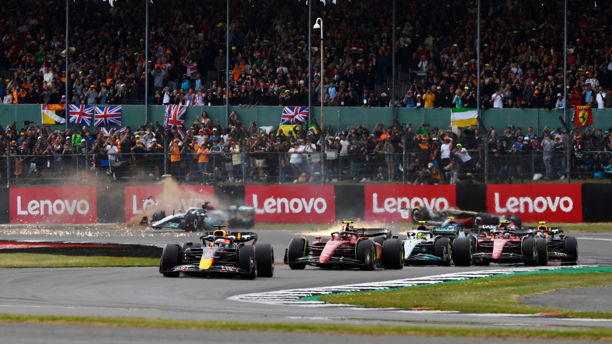

Résumé GP de Grande-Bretagne 2022
Rédigé par Clément Lazzarini, le 03/07/2022
Le chaos
À peine quelques centaines de mètres après le départ de la course, que le chaos s'est emparé de la course. La course est mise sous drapeau rouge dès le troisième virage suite à la sortie de piste spectaculaire du pilote chinois Guanyu Zhou. Après un départ difficile le pilote à Pierre Gasly dans son angle mort droit tout comme George Russell, lui aussi en difficulté au départ. Le britannique serre le français et touche son aileron avant ce qui le projète sur la gauche, sur Guanyu Zhou. La voiture du pilote chinois se retourne et glisse à l'envers et finit sa course sur le grillage de sécurité des gradins ! Un accident spectaculaire, accompagné de celui d'Alexander Albon qui se fera percuter à plusieurs reprises. Heureusement, il n'y a eu aucun blessé à déplorer dans ce départ chaotique.
Le thriller
Mais le chaos du départ a laissé place au suspens. Un deuxième départ est lancé et la bataille pour la victoire est déjà rude. Les deux Ferrari et le deux Red Bull se retrouvent à quatre dans le virage 4. Et c'est Carlos Sainz qui sort devant tout le monde. Charles Leclerc et Sergio Perez se touchent ce qui forcera Perez à rentrer au stand changer son aileron, et Charles Leclerc à finir la course avec un aileron endommagé. Ensuite, Max Verstappen reprendra la tête quelques instants suite à une erreur du pilote espagnol Carlos Sainz, avant de lui recéder la place à cause d'une crevaison et de dégâts sur son fond plat. Il finira la course 7ème. S'en suivi une bataille entre les deux pilotes Ferrari et un Lewis Hamilton juste derrière avec rythme de feu qui revenait au avant-poste. Le suspens pour la victoire était à son comble.
Les émotions
Puis tout s'est emballé. Esteban Ocon connaît une panne moteur et est obligé de s'arrêter sur la piste. Drapeau jaune et Safety Car sont de sortie. Tous les pilotes de têtes rentrent chausser des pneus tendres à part.. le leader Charles Leclerc. Incompréhensible. La Safety Car s'efface quelques tours plus tard et nous laisse avec un spectacle incroyable. Je ne saurais vous décrire toutes les batailles en piste tellement il y en a eu en si peu de tours et avec autant de pilotes différents. C'est exactement pour ce genre de moment que nous suivons ce sport. Des frissons. Au final, c'est Carlos Sainz qui l'emporte pour la première fois de sa carrière devant Sergio Perez, Lewis Hamilton et Charles Leclerc. À noter la première rentrée dans les points de Mick Schumacher, 8ème!
Des dimanches comme celui-ci, on en veut tous les week-ends !